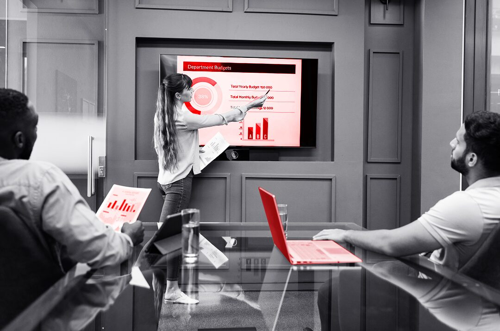

Migration map
Build a Hearth migration matrix for OpenEB, Metavision SDK, EVK cameras, Windows, Ubuntu, C++ and Python paths.
We saw PROPHESEE launch Mantara and Hearth on June 15, 2026, alongside a EUR20M raise. That points to product scale-up, migration pressure, and new customer delivery load.
Your public move is from sensor and SDK strength into a full system. Mantara is now field-validated, and Hearth is described as the path after OpenEB and the standalone Metavision SDK. That puts Nicolas's team near a hard point: keep current C++ and Python users moving while new defense and industrial buyers expect production support. If migration, tests, and docs fall behind, pilots can slow down. The risk is not vision science. It is software delivery around a fast product shift.
Hearth is replacing OpenEB and Metavision SDK. Start with a migration matrix across EVKs, sensors, C++ samples, Python samples, Windows, and Ubuntu.
Recent release notes mention Windows crashes, invalid event slices, and empty camera slices. Turn those fixes into regression tests before partner demos.
Build a Hearth migration matrix for OpenEB, Metavision SDK, EVK cameras, Windows, Ubuntu, C++ and Python paths.
Add regression tests around public samples that already showed Windows crashes, empty event slices, and camera plugin edge cases.
Create a hardware-in-the-loop QA lane for sensor streaming, recording, replay, and upgrade flows before partner demos.
Package a short developer path: install, run, debug, and migrate one sample in under one working session.

Elinext staffed several teams around a C++ industrial system, integration work, and long-running product support.
Read the case study
Elinext added QA automation, DevOps, and web engineers as an extension of the client's technical department.
Read the case study